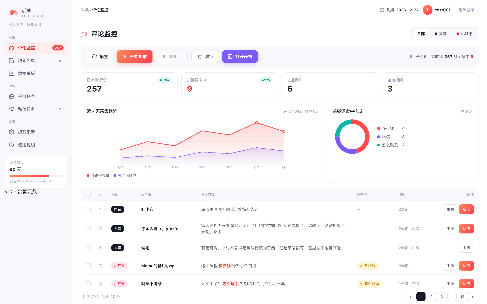
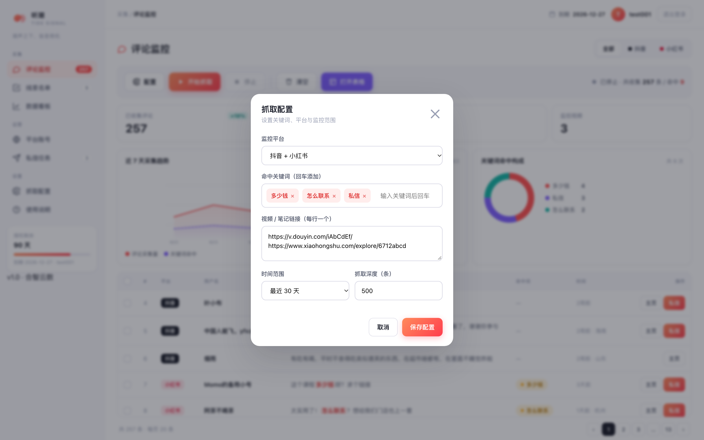

多平台评论监听
粘贴视频或笔记链接，听潮自动滚动评论区、抓取主评与子回复，关键词命中即时入表。
听潮 TideSignal
抖音、小红书的评论区里，每天都躺着大量正在找你的人。
听潮替你盯着关键词，命中即入库、自动去重，导出就是一份可跟进的名单。
支持 macOS 12+ / Windows 10+ · 数据保存在你自己的电脑上

功能亮点
粘贴视频或笔记链接，听潮自动滚动评论区、抓取主评与子回复，关键词命中即时入表。
「多少钱」「怎么联系」「私信」这类意向词，命中任意一个即入选，评论里的关键词会高亮标出。
同一个人评论十次，只算一条线索。跨任务、跨平台去重，状态可流转：待联系 → 已联系 → 已回复 → 已成交。
近 7 天采集趋势、关键词命中构成、转化状态分布，一眼看清哪个渠道、哪个词最值钱。
Excel / CSV 直接导出，含昵称、评论原文、命中词、主页链接，接进你现有的 CRM 或表格都行。
采集在你自己的电脑、自己的账号下执行，评论原文不上传云端；授权只校验账号有效期。
怎么用
在「平台账号」里扫码登录一次，登录态保存在本机，之后免扫码。
粘贴视频链接（整段分享文案也行，会自动抠出链接），填关键词、选平台与时间范围。
点一下就开始，命中的线索实时进池；跑完导出 Excel，或直接在线索池里标状态。

收费标准
所有版本功能一致，区别只在可监控的平台数量与同时任务数。
* 具体价格以销售报价为准，功能迭代不额外加价。
下载
安装包会自动更新；绿色版解压即用，不写注册表。
已按 Apple 芯片准备 macOS 安装包 · 我是 Intel 芯片
macOS 12 Monterey 及以上；Windows 10 / 11 64 位。首次使用需联网激活授权。
采集使用本机已安装的 Chrome，无需额外下载浏览器内核。
Windows 首次运行被 SmartScreen 拦截时，点「更多信息 → 仍要运行」。macOS 首次打开若提示「已损坏」，在「终端」里执行 xattr -rd com.apple.quarantine /Applications/听潮.app 回车，再打开即可（应用尚未做苹果公证的临时限制）。
常见问题
听潮只做「读评论」，不代发私信、不自动关注。采集运行在你自己的账号与本机 IP 上，行为接近真人浏览；抓取深度与频率可在设置里调低。我们不建议、也没有提供批量群发功能。
批量私信陌生人是平台重点打击的违规引流行为，且涉及个人信息合规风险。听潮的定位是帮你「找到对的人」，触达由你自己在平台内正常沟通完成。
线索、配置与导出文件全部保存在你本机的应用数据目录，评论原文不上传云端。云端只校验账号有效期与版本号。
客户端内置自动更新：有新版本时会在应用内提示，确认后自动下载安装。绿色版用户同样支持覆盖更新。
v1.0.3 已开放抖音；小红书、视频号正在接入，届时客户端内直接可选，无需重新安装。